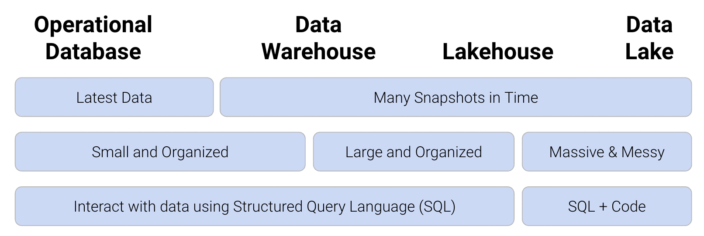
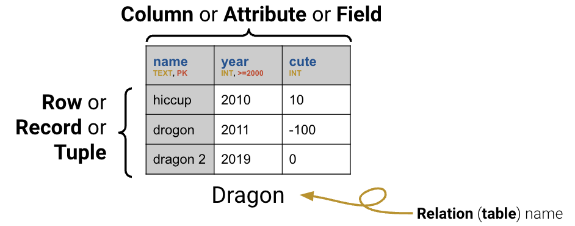

# Load the SQL Alchemy Python library
import sqlalchemy
import pandas as pdSQL I
So far in the course, we have made our way through the entire data science lifecycle: we learned how to load and explore a dataset, formulate questions, and use the tools of prediction and inference to come up with answers. For the remaining weeks of the semester, we are going to make a second pass through the lifecycle, this time doing so with a different set of tools, ideas, and abstractions.
Databases
With this goal in mind, let’s go back to the very beginning of the lifecycle. We first started our work in data analysis by looking at the pandas library, which offered us powerful tools to manipulate tabular data stored in (primarily) CSV files. CSVs work well when analyzing relatively small datasets that don’t need to be shared across many users. In research and industry, however, data scientists often need to access enormous bodies of data that cannot be easily stored in a CSV format. Collaborating with others when working with CSVs can also be tricky – a real-world data scientist may run into problems when multiple users try to make modifications, or, even worse, security issues with who should and should not have access to the data.
A database is a large, organized collection of data. Databases are administered by Database Management Systems (DBMS), which are software systems that store, manage, and facilitate access to one or more databases. Databases help mitigate many of the issues that come with using CSVs for data storage: they provide reliable storage that can survive system crashes or disk failures, are optimized to compute on data that does not fit into memory, and contain special data structures to improve performance. Using databases rather than CSVs offers further benefits from the standpoint of data management. A DBMS can apply settings that configure how data is organized, block certain data anomalies (for example, enforcing non-negative weights or ages), and determine who is allowed access to the data. It can also ensure safe concurrent operations where multiple users reading and writing to the database will not lead to fatal errors.

As you may have guessed, we can’t use our usual pandas methods to work with data in a database. Instead, we’ll turn to Structured Query Language.
Structured Query Language and Database Schema
Structured Query Language, or SQL (commonly pronounced “sequel,” though this is the subject of fierce debate), is a special programming language designed to communicate with databases. You may have encountered it in classes like CS 61A or Data C88C before. Unlike Python, it is a declarative programming language – this means that rather than writing the exact logic needed to complete a task, a piece of SQL code “declares” what the desired final output should be and leaves the program to determine what logic should be implemented.
It is important to reiterate that SQL is an entirely different language from Python. However, Python does have special engines that allow us to run SQL code in a Jupyter notebook. While this is typically not how SQL is used outside of an educational setting, we will be using this workflow to illustrate how SQL queries are constructed using the tools we’ve already worked with this semester. You will learn more about how to run SQL queries in Jupyter in Lab 10.
The syntax below will seem unfamiliar to you; for now, just focus on understanding the output displayed. We will clarify the SQL code in a bit.
To start, we’ll look at a database called basic_examples.db.
# load %%sql cell magic
%load_ext sqlConnect to the SQLite database basic_examples.db.
%%sql
sqlite:///data/basic_examples.db %%sql
SELECT *
FROM sqlite_master
WHERE type="table"The summary above displays information about the database. The database contains four tables, named sqlite_sequence, Dragon, Dish, and Scene. The rightmost column above lists the command that was used to construct each table.
Let’s look more closely at the command used to create the Dragon table (the second entry above).
CREATE TABLE Dragon (name TEXT PRIMARY KEY,
year INTEGER CHECK (year >= 2000),
cute INTEGER)The statement CREATE TABLE is used to specify the schema of the table – a description of what logic is used to organize the table. Schema follows a set format:
ColName: the name of a columnDataType: the type of data to be stored in a column. Some of the most common SQL data types areINT(integers),FLOAT(floating point numbers),TEXT(strings),BLOB(arbitrary data, such as audio/video files), andDATETIME(a date and time).Constraint: some restriction on the data to be stored in the column. Common constraints areCHECK(data must obey a certain condition),PRIMARY KEY(designate a column as the table’s primary key),NOT NULL(data cannot be null), andDEFAULT(a default fill value if no specific entry is given).

We see that Dragon contains three columns. The first of these, "name", contains text data. It is designated as the primary key of the table; that is, the data contained in "name" uniquely identifies each entry in the table. Because "name" is the primary key of the table, no two entries in the table can have the same name – a given value of "name" is unique to each dragon. The "year" column contains integer data, with the constraint that year values must be greater than or equal to 2000. The final column, "cute", contains integer data with no restrictions on allowable values.
We can verify this by viewing Dragon itself.
%%sql
SELECT *
FROM DragonDatabase tables (also referred to as relations) are structured much like DataFrames in pandas. Each row, sometimes called a tuple, represents a single record in the dataset. Each column, sometimes called an attribute or field, describes some feature of the record.
SELECTing From Tables
To extract and manipulate data stored in a SQL table, we will need to familiarize ourselves with the syntax to write pieces of SQL code, which we call queries.
The basic unit of a SQL query is the SELECT statement. SELECT specifies what columns we would like to extract from a given table. We use FROM to tell SQL the table from which we want to SELECT our data.
%%sql
SELECT *
FROM DragonIn SQL, * means “everything.” The query above grabs all the columns in Dragon and displays them in the outputted table. We can also specify a specific subset of columns to be SELECTed. Notice that the outputted columns appear in the order that they were SELECTed.
%%sql
SELECT cute, year
FROM DragonAnd just like that, we’ve already written two SQL queries. There are a few points of note in the queries above. Firstly, notice that every “verb” is written in uppercase. It is convention to write SQL operations in capital letters, but your code will run just fine even if you choose to keep things in lowercase. Second, the query above separates each statement with a new line. SQL queries are not impacted by whitespace within the query; this means that SQL code is typically written with a new line after each statement to make things more readable. The semicolon (;) indicates the end of a query. There are some “flavors” of SQL in which a query will not run if no semicolon is present; however, in Data 100, the SQL version we will use works with or without an ending semicolon. Queries in these notes will end with semicolons to build up good habits.
The AS keyword allows us to give a column a new name (called an alias) after it has been SELECTed. The general syntax is:
SELECT column_name_in_database_table AS new_name_in_output_table%%sql
SELECT cute AS cuteness, year AS birth
FROM DragonTo SELECT only the unique values in a column, we use the DISTINCT keyword. This will cause any any duplicate entries in a column to be removed. If we want to find only the unique years in Dragon, without any repeats, we would write:
%%sql
SELECT DISTINCT year
FROM DragonEvery SQL query must include both a SELECT and FROM statement. Intuitively, this makes sense – we know that we’ll want to extract some piece of information from the table; to do so, we also need to indicate what table we want to consider.
It is important to note that SQL enforces a strict “order of operations” – SQL clauses must always follow the same sequence. For example, the SELECT statement must always precede FROM. This means that any SQL query will follow the same structure.
SELECT <column list>
FROM <table>
[additional clauses]The additional clauses that we use depend on the specific task trying to be achieved. We may refine our query to filter on a certain condition, aggregate a particular column, or join several tables together. We will spend the rest of this lecture outlining some useful clauses to build up our understanding of the order of operations.
Applying WHERE Conditions
The WHERE keyword is used to select only some rows of a table, filtered on a given Boolean condition.
%%sql
SELECT name, year
FROM Dragon
WHERE cute > 0We can add complexity to the WHERE condition using the keywords AND, OR, and NOT, much like we would in Python.
%%sql
SELECT name, year
FROM Dragon
WHERE cute > 0 OR year > 2013To spare ourselves needing to write complicated logical expressions by combining several conditions, we can also filter for entries that are IN a specified list of values. This is similar to the use of in or .isin in Python.
%%sql
SELECT name, year
FROM Dragon
WHERE name IN ("hiccup", "puff")You may have noticed earlier that our table actually has a missing value. In SQL, missing data is given the special value NULL. NULL behaves in a fundamentally different way to other data types. We can’t use the typical operators (=, >, and <) on NULL values (in fact, NULL == NULL returns False!); instead, we check to see if a value IS or IS NOT NULL.
%%sql
SELECT *
FROM Dragon
WHERE cute IS NOT NULLSorting and Restricting Output
What if we want the output table to appear in a certain order? The ORDER BY keyword behaves similarly to .sort_values() in pandas.
%%sql
SELECT *
FROM Dragon
ORDER BY cuteBy default, ORDER BY will display results in ascending order (with the lowest values at the top of the table). To sort in descending order, we use the DESC keyword after specifying the column to be used for ordering.
%%sql
SELECT *
FROM Dragon
ORDER BY cute DESCWe can also tell SQL to ORDER BY two columns at once. This will sort the table by the first listed column, then use the values in the second listed column to break any ties.
%%sql
SELECT *
FROM Dragon
ORDER BY name, cuteIn many instances, we are only concerned with a certain number of rows in the output table (for example, wanting to find the first two dragons in the table). The LIMIT keyword restricts the output to a specified number of rows. It serves a function similar to that of .head() in pandas.
%%sql
SELECT *
FROM Dragon
LIMIT 2The OFFSET keyword indicates the index at which LIMIT should start. In other words, we can use OFFSET to shift where the LIMITing begins by a specified number of rows. For example, we might care about the dragons that are at positions #2 and #3 in the table.
%%sql
SELECT *
FROM Dragon
LIMIT 2
OFFSET 1Let’s summarize what we’ve learned so far. We know that SELECT and FROM are the fundamental building blocks of any SQL query. We can augment these two keywords with additional clauses to refine the data in our output table.
Any clauses that we include must follow a strict ordering within the query:
SELECT <column list>
FROM <table>
[WHERE <predicate>]
[ORDER BY <column list>]
[LIMIT <number of rows>]
[OFFSET <number of rows>]Here, any clause contained in square brackets [ ] is optional – we only need to use the keyword if it is relevant to the table operation we want to perform. Also note that by convention, we use all caps for keywords in SQL statements and use newlines to make code more readable.
Aggregating with GROUP BY
At this point, we’ve seen that SQL offers much of the same functionality that was given to us by pandas. We can extract data from a table, filter it, and reorder it to suit our needs.
In pandas, much of our analysis work relied heavily on being able to use .groupby() to aggregate across the rows of our dataset. SQL’s answer to this task is the (very conveniently named) GROUP BY clause. While the outputs of GROUP BY are similar to those of .groupby() – in both cases, we obtain an output table where some column has been used for grouping – the syntax and logic used to group data in SQL are fairly different to the pandas implementation.
To illustrate GROUP BY, we will consider the Dish table from the basic_examples.db database.
%%sql
SELECT *
FROM DishSay we wanted to find the total costs of dishes of a certain type. To accomplish this, we would write the following code.
%%sql
SELECT type, SUM(cost)
FROM Dish
GROUP BY typeWhat is going on here? The statement GROUP BY type tells SQL to group the data based on the value contained in the type column (whether a record is an appetizer, entree, or dessert). SUM(cost) sums up the costs of dishes in each type and displays the result in the output table.
You may be wondering: why does SUM(cost) come before the command to GROUP BY type? Don’t we need to form groups before we can count the number of entries in each?
Remember that SQL is a declarative programming language – a SQL programmer simply states what end result they would like to see, and leaves the task of figuring out how to obtain this result to SQL itself. This means that SQL queries sometimes don’t follow what a reader sees as a “logical” sequence of thought. Instead, SQL requires that we follow its set order of operations when constructing queries. So long as we follow this ordering, SQL will handle the underlying logic.
In practical terms: our goal with this query was to output the total costs of each type. To communicate this to SQL, we say that we want to SELECT the SUMmed cost values for each type group.
There are many aggregation functions that can be used to aggregate the data contained in each group. Some common examples are:
COUNT: count the number of rows associated with each groupMIN: find the minimum value of each groupMAX: find the maximum value of each groupSUM: sum across all records in each groupAVG: find the average value of each group
We can easily compute multiple aggregations, all at once (a task that was very tricky in pandas).
%%sql
SELECT type, SUM(cost), MIN(cost), MAX(name)
FROM Dish
GROUP BY typeTo count the number of rows associated with each group, we use the COUNT keyword. Calling COUNT(*) will compute the total number of rows in each group, including rows with null values. Its pandas equivalent is .groupby().size().
%%sql
SELECT type, COUNT(*)
FROM Dish
GROUP BY typeTo exclude NULL values when counting the rows in each group, we explicitly call COUNT on a column in the table. This is similar to calling .groupby().count() in pandas.
%%sql
SELECT year, COUNT(cute)
FROM Dragon
GROUP BY yearWith this definition of GROUP BY in hand, let’s update our SQL order of operations. Remember: every SQL query must list clauses in this order.
SELECT <column expression list>
FROM <table>
[WHERE <predicate>]
[GROUP BY <column list>]
[ORDER BY <column list>]
[LIMIT <number of rows>]
[OFFSET <number of rows>];Note that we can use the AS keyword to rename columns during the selection process and that column expressions may include aggregation functions (MAX, MIN, etc.).